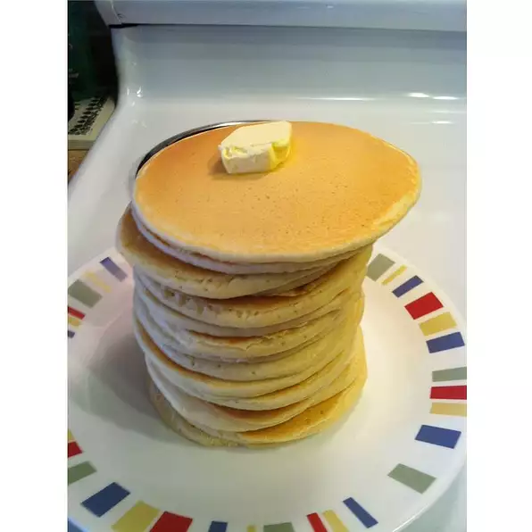

Pancakes

Description
A easy to prepare pancake dish!
Ingredients
- 2 large eggs
- 2 teaspoons white sugar
- 1 pinch salt
- 2 cups all-purpose flour
- 2 teaspoons baking powder
- 2 cups milk
Steps
- Beat eggs until fluffy; beat in sugar and salt.
In a separate bowl, stir flour and baking powder
together. Stir milk and flour mixture alternately
into eggs, starting and ending with milk.
- Heat a lightly oiled griddle or frying pan over
medium high heat. Pour or scoop the batter onto t
he griddle, using approximately 1/4 cup for each
pancake. Do not turn pancake until tiny holes
appear all over the uncooked side (top) of the pancake
in the pan. Brown on both sides and serve hot.